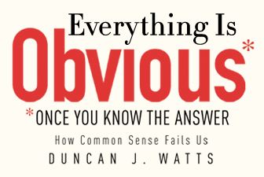

Follow me on the Reading Rainbow

Over the summer I've been able to successfully chisel away at my goal of reading 20 books by 16
different authors in 2015, with my two weeks of travel to and around Spain providing me ample time
to dive into my iPad and digest. For this tour, I went back in time and read Nicholas Christakis'
Connected, which actually provided me with some insight on researchers and topics that I thought I
already knew pretty well. In terms of an overview of how networks affect social phenomena, I would
highly recommend it. I also plowed through Nate Silver's The Signal and The Noise, because I'm
convinced that being acquainted with Nate Silver's work is the litmus test in the public for
understanding data science. It was pretty good, although some of his metaphors were clunky and only
really stuck with me because of reading fivethirtyeight (his own data science news blog) since its
inception.
However, it was the third book that really stuck with me. Duncan Watts' "Everything is Obvious
...once you know the answer" is a quick tour through his work starting with Steven Strogatz at
Cornell and covering his work at Columbia University and Yahoo Research. The opening vignette, of
how his roommate reads a newspaper article about something silly in sociological research and
remarks to him that "He should switch to the social sciences and solve all the problems in a week".
That remark, which has been said many times by physicists (both positively and negatively as they
continue to enter new fields) sets us out on our journey.
The reality is that it's been a decade, and while Duncan and many others quantitative scientists have published great work investigating social science problems, understanding of social systems and human behavior remains as elusive today as 20 years ago. If anything, what we've learned is that randomness and unseen or unmeasurable effects have the ability to impede making predictions that go far into the future.
A great experiment from Watts’ team demonstrates this: users were able to go to a website (called Music Lab) and listen to music for free. After listening to a song they would be asked to rate it (on a 5 point scale) and were then given the opportunity to download it. However, there were multiple 'worlds' constructed for the users (all containing the same songs). In the first world, the songs were merely displayed, in the other worlds the songs were ranked by and displayed the number of downloads.
Now, if behavior was in any way predictable, the end ratings and downloads from these different worlds should match. With large enough populations the true 'quality' of a song should shine through and there should be a strong correlation between ratings in the different “worlds”.
Not at all. When we allow for social influence, the winners become even bigger winners. Furthermore, the 'more' that they win is highly variable between worlds. A song that gets a high rating early accumulates more high ratings. And the initial ratings are extremely stochastic.
This may seem obvious in hindsight (the name of the book, right?), but it's really not. Behaviors are erratic, and difficult to predict. If the social world behaved like the physical world, individuals would have a negligible influence on each other. Or at least, in larger populations the randomness would become less dominant. Of course, we don’t see this. The social world is weird, chaotic, and difficult to predict. Not exactly the unifying laws that came from Physics after all.
The reality is that it's been a decade, and while Duncan and many others quantitative scientists have published great work investigating social science problems, understanding of social systems and human behavior remains as elusive today as 20 years ago. If anything, what we've learned is that randomness and unseen or unmeasurable effects have the ability to impede making predictions that go far into the future.
A great experiment from Watts’ team demonstrates this: users were able to go to a website (called Music Lab) and listen to music for free. After listening to a song they would be asked to rate it (on a 5 point scale) and were then given the opportunity to download it. However, there were multiple 'worlds' constructed for the users (all containing the same songs). In the first world, the songs were merely displayed, in the other worlds the songs were ranked by and displayed the number of downloads.
Now, if behavior was in any way predictable, the end ratings and downloads from these different worlds should match. With large enough populations the true 'quality' of a song should shine through and there should be a strong correlation between ratings in the different “worlds”.
Not at all. When we allow for social influence, the winners become even bigger winners. Furthermore, the 'more' that they win is highly variable between worlds. A song that gets a high rating early accumulates more high ratings. And the initial ratings are extremely stochastic.
This may seem obvious in hindsight (the name of the book, right?), but it's really not. Behaviors are erratic, and difficult to predict. If the social world behaved like the physical world, individuals would have a negligible influence on each other. Or at least, in larger populations the randomness would become less dominant. Of course, we don’t see this. The social world is weird, chaotic, and difficult to predict. Not exactly the unifying laws that came from Physics after all.